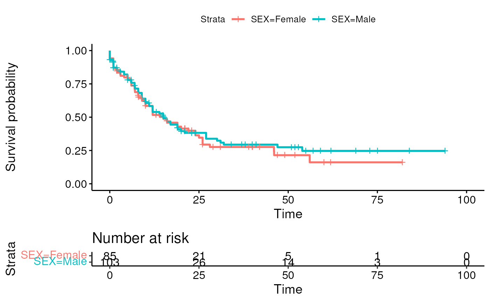

vignettes/cBioPortalData.Rmd
cBioPortalData.RmdThe cBioPortal for Cancer Genomics website is a great resource for interactive exploration of study datasets. However, it does not easily allow the analyst to obtain and further analyze the data.
We’ve developed the cBioPortalData package to fill this need to programmatically access the data resources available on the cBioPortal.
The cBioPortalData package provides an R interface for accessing the cBioPortal study data within the Bioconductor ecosystem.
It downloads study data from the cBioPortal API (the full API specification can be found here https://cbioportal.org/api) and uses Bioconductor infrastructure to cache and represent the data.
We use the MultiAssayExperiment (@Ramos2017-er) package to integrate, represent, and coordinate multiple experiments for the studies availble in the cBioPortal. This package in conjunction with curatedTCGAData give access to a large trove of publicly available bioinformatic data. Please see our publication here (@Ramos2020-ya).
We demonstrate common use cases of cBioPortalData and curatedTCGAData during Bioconductor conference workshops.
Data are provided as a single MultiAssayExperiment per study. The MultiAssayExperiment representation usually contains SummarizedExperiment objects for expression data and RaggedExperiment objects for mutation and CNV-type data. RaggedExperiment is a data class for representing ‘ragged’ genomic location data, meaning that the measurements per sample vary.
For more information, please see the RaggedExperiment and SummarizedExperiment vignettes.
As we work through the data, there are some datasest that cannot be represented as MultiAssayExperiment objects. This can be due to a number of reasons such as the way the data is handled, presence of mis-matched identifiers, invalid data types, etc. To see what datasets are currently not building, we can look at the studiesTable dataset that comes with the package. We can invoke it using:
## DataFrame with 6 rows and 6 columns
## cancer_study_id study_name description
## <character> <character> <character>
## 1 paac_jhu_2014 Acinar Cell Carcinom.. Whole exome sequenci..
## 2 mel_tsam_liang_2017 Acral Melanoma (TGEN.. Whole exome sequenci..
## 3 all_stjude_2015 Acute Lymphoblastic .. Comprehensive profil..
## 4 all_stjude_2016 Acute Lymphoblastic .. Whole-genome and/or ..
## 5 aml_ohsu_2018 Acute Myeloid Leukem.. Whole-exome sequenci..
## 6 laml_tcga Acute Myeloid Leukem.. TCGA Acute Myeloid L..
## URL pack_build api_build
## <character> <logical> <logical>
## 1 TRUE TRUE
## 2 FALSE TRUE
## 3 TRUE TRUE
## 4 TRUE TRUE
## 5 TRUE TRUE
## 6 http://gdac.broadins.. TRUE TRUEThe last two columns will show the availability of each cancer_study_id for either download method (pack_build for cBioDataPack and api_build for cBioPortalData).
There are two main user-facing functions for downloading data from the cBioPortal API.
cBioDataPack makes use of the tarball distribution of study data. This is useful when the user wants to download and analyze the entirety of the data as available from the cBioPortal.org website.
cBioPortalData allows a more flexibile approach to obtaining study data based on the available parameters such as molecular profile identifiers. This option is useful for users who have a set of gene symbols or identifiers and would like to get a smaller subset of the data that correspond to a particular molecular profile.
This function will access the packaged data from and return an integrative MultiAssayExperiment representation.
## Use ask=FALSE for non-interactive use
laml <- cBioDataPack("laml_tcga", ask = FALSE)
laml## A MultiAssayExperiment object of 13 listed
## experiments with user-defined names and respective classes.
## Containing an ExperimentList class object of length 13:
## [1] cna_hg19.seg: RaggedExperiment with 13571 rows and 191 columns
## [2] CNA: SummarizedExperiment with 24776 rows and 191 columns
## [3] linear_CNA: SummarizedExperiment with 24776 rows and 191 columns
## [4] methylation_hm27: SummarizedExperiment with 10968 rows and 194 columns
## [5] methylation_hm450: SummarizedExperiment with 10968 rows and 194 columns
## [6] mutations_extended: RaggedExperiment with 2584 rows and 197 columns
## [7] mutations_mskcc: RaggedExperiment with 2584 rows and 197 columns
## [8] RNA_Seq_expression_median: SummarizedExperiment with 19720 rows and 179 columns
## [9] RNA_Seq_mRNA_median_all_sample_Zscores: SummarizedExperiment with 19720 rows and 179 columns
## [10] RNA_Seq_mRNA_median_Zscores: SummarizedExperiment with 19719 rows and 179 columns
## [11] RNA_Seq_v2_expression_median: SummarizedExperiment with 20531 rows and 173 columns
## [12] RNA_Seq_v2_mRNA_median_all_sample_Zscores: SummarizedExperiment with 20531 rows and 173 columns
## [13] RNA_Seq_v2_mRNA_median_Zscores: SummarizedExperiment with 20440 rows and 173 columns
## Functionality:
## experiments() - obtain the ExperimentList instance
## colData() - the primary/phenotype DataFrame
## sampleMap() - the sample coordination DataFrame
## `$`, `[`, `[[` - extract colData columns, subset, or experiment
## *Format() - convert into a long or wide DataFrame
## assays() - convert ExperimentList to a SimpleList of matrices
## exportClass() - save all data to filesThis function provides a more flexible and granular way to request a MultiAssayExperiment object from a study ID, molecular profile, gene panel, sample list.
cbio <- cBioPortal()
acc <- cBioPortalData(api = cbio, by = "hugoGeneSymbol", studyId = "acc_tcga",
genePanelId = "IMPACT341",
molecularProfileIds = c("acc_tcga_rppa", "acc_tcga_linear_CNA")
)## harmonizing input:
## removing 1 colData rownames not in sampleMap 'primary'
acc## A MultiAssayExperiment object of 2 listed
## experiments with user-defined names and respective classes.
## Containing an ExperimentList class object of length 2:
## [1] acc_tcga_rppa: SummarizedExperiment with 57 rows and 46 columns
## [2] acc_tcga_linear_CNA: SummarizedExperiment with 339 rows and 90 columns
## Functionality:
## experiments() - obtain the ExperimentList instance
## colData() - the primary/phenotype DataFrame
## sampleMap() - the sample coordination DataFrame
## `$`, `[`, `[[` - extract colData columns, subset, or experiment
## *Format() - convert into a long or wide DataFrame
## assays() - convert ExperimentList to a SimpleList of matrices
## exportClass() - save all data to filesNote. To avoid overloading the API service, the API was designed to only query a part of the study data. Therefore, the user is required to enter either a set of genes of interest or a gene panel identifier.
In cases where a download is interrupted, the user may experience a corrupt cache. The user can clear the cache for a particular study by using the removeCache function. Note that this function only works for data downloaded through the cBioDataPack function.
removeCache("laml_tcga")For users who wish to clear the entire cBioPortalData cache, it is recommended that they use:
unlink("~/.cache/cBioPortalData/")We can use information in the colData to draw a K-M plot with a few variables from the colData slot of the MultiAssayExperiment. First, we load the necessary packages:
We can check the data to lookout for any issues.
table(colData(laml)$OS_STATUS)##
## 0:LIVING 1:DECEASED
## 67 133
class(colData(laml)$OS_MONTHS)## [1] "character"Now, we clean the data a bit to ensure that our variables are of the right type for the subsequent survival model fit.
collaml <- colData(laml)
collaml[collaml$OS_MONTHS == "[Not Available]", "OS_MONTHS"] <- NA
collaml$OS_MONTHS <- as.numeric(collaml$OS_MONTHS)
colData(laml) <- collamlWe specify a simple survival model using SEX as a covariate and we draw the K-M plot.
fit <- survfit(
Surv(OS_MONTHS, as.numeric(substr(OS_STATUS, 1, 1))) ~ SEX,
data = colData(laml)
)
ggsurvplot(fit, data = colData(laml), risk.table = TRUE)
If you are interested in a particular study dataset that is not currently building, please open an issue at our GitHub repository location and we will do our best to resolve the issues with either the data or the code.
We appreciate your feedback!
## R version 4.1.0 (2021-05-18)
## Platform: x86_64-pc-linux-gnu (64-bit)
## Running under: Ubuntu 20.04.2 LTS
##
## Matrix products: default
## BLAS/LAPACK: /usr/lib/x86_64-linux-gnu/openblas-pthread/libopenblasp-r0.3.8.so
##
## locale:
## [1] LC_CTYPE=en_US.UTF-8 LC_NUMERIC=C
## [3] LC_TIME=en_US.UTF-8 LC_COLLATE=en_US.UTF-8
## [5] LC_MONETARY=en_US.UTF-8 LC_MESSAGES=C
## [7] LC_PAPER=en_US.UTF-8 LC_NAME=C
## [9] LC_ADDRESS=C LC_TELEPHONE=C
## [11] LC_MEASUREMENT=en_US.UTF-8 LC_IDENTIFICATION=C
##
## attached base packages:
## [1] parallel stats4 stats graphics grDevices utils datasets
## [8] methods base
##
## other attached packages:
## [1] survminer_0.4.9 ggpubr_0.4.0
## [3] ggplot2_3.3.5 survival_3.2-12
## [5] cBioPortalData_2.4.8 MultiAssayExperiment_1.18.0
## [7] SummarizedExperiment_1.22.0 Biobase_2.52.0
## [9] GenomicRanges_1.44.0 GenomeInfoDb_1.28.1
## [11] IRanges_2.26.0 S4Vectors_0.30.0
## [13] BiocGenerics_0.38.0 MatrixGenerics_1.4.2
## [15] matrixStats_0.60.0 AnVIL_1.4.1
## [17] dplyr_1.0.7 BiocStyle_2.20.2
##
## loaded via a namespace (and not attached):
## [1] readxl_1.3.1 backports_1.2.1
## [3] BiocFileCache_2.0.0 systemfonts_1.0.2
## [5] RCircos_1.2.1 splines_4.1.0
## [7] BiocParallel_1.26.1 TCGAutils_1.12.0
## [9] digest_0.6.27 htmltools_0.5.1.1
## [11] fansi_0.5.0 magrittr_2.0.1
## [13] memoise_2.0.0 tzdb_0.1.2
## [15] openxlsx_4.2.4 limma_3.48.3
## [17] Biostrings_2.60.2 readr_2.0.1
## [19] vroom_1.5.4 pkgdown_1.6.1
## [21] prettyunits_1.1.1 colorspace_2.0-2
## [23] blob_1.2.2 rvest_1.0.1
## [25] rappdirs_0.3.3 textshaping_0.3.5
## [27] haven_2.4.3 xfun_0.25
## [29] crayon_1.4.1 RCurl_1.98-1.4
## [31] jsonlite_1.7.2 RaggedExperiment_1.16.0
## [33] zoo_1.8-9 glue_1.4.2
## [35] GenomicDataCommons_1.16.0 gtable_0.3.0
## [37] zlibbioc_1.38.0 XVector_0.32.0
## [39] DelayedArray_0.18.0 car_3.0-11
## [41] abind_1.4-5 scales_1.1.1
## [43] futile.options_1.0.1 DBI_1.1.1
## [45] rstatix_0.7.0 Rcpp_1.0.7
## [47] gridtext_0.1.4 xtable_1.8-4
## [49] progress_1.2.2 foreign_0.8-81
## [51] bit_4.0.4 km.ci_0.5-2
## [53] httr_1.4.2 ellipsis_0.3.2
## [55] farver_2.1.0 pkgconfig_2.0.3
## [57] XML_3.99-0.7 rapiclient_0.1.3
## [59] dbplyr_2.1.1 utf8_1.2.2
## [61] RJSONIO_1.3-1.5 labeling_0.4.2
## [63] tidyselect_1.1.1 rlang_0.4.11
## [65] AnnotationDbi_1.54.1 munsell_0.5.0
## [67] cellranger_1.1.0 tools_4.1.0
## [69] cachem_1.0.6 cli_3.0.1
## [71] generics_0.1.0 RSQLite_2.2.8
## [73] broom_0.7.9 evaluate_0.14
## [75] stringr_1.4.0 fastmap_1.1.0
## [77] yaml_2.2.1 ragg_1.1.3
## [79] knitr_1.33 bit64_4.0.5
## [81] fs_1.5.0 zip_2.2.0
## [83] survMisc_0.5.5 purrr_0.3.4
## [85] KEGGREST_1.32.0 formatR_1.11
## [87] xml2_1.3.2 biomaRt_2.48.3
## [89] compiler_4.1.0 filelock_1.0.2
## [91] curl_4.3.2 png_0.1-7
## [93] ggsignif_0.6.2 tibble_3.1.3
## [95] stringi_1.7.3 highr_0.9
## [97] futile.logger_1.4.3 GenomicFeatures_1.44.1
## [99] desc_1.3.0 forcats_0.5.1
## [101] lattice_0.20-44 Matrix_1.3-4
## [103] markdown_1.1 KMsurv_0.1-5
## [105] RTCGAToolbox_2.22.1 vctrs_0.3.8
## [107] pillar_1.6.2 lifecycle_1.0.0
## [109] BiocManager_1.30.16 data.table_1.14.0
## [111] bitops_1.0-7 rtracklayer_1.52.1
## [113] R6_2.5.1 BiocIO_1.2.0
## [115] bookdown_0.23 gridExtra_2.3
## [117] rio_0.5.27 codetools_0.2-18
## [119] lambda.r_1.2.4 assertthat_0.2.1
## [121] rprojroot_2.0.2 rjson_0.2.20
## [123] withr_2.4.2 GenomicAlignments_1.28.0
## [125] Rsamtools_2.8.0 GenomeInfoDbData_1.2.6
## [127] ggtext_0.1.1 hms_1.1.0
## [129] grid_4.1.0 tidyr_1.1.3
## [131] rmarkdown_2.10 carData_3.0-4
## [133] restfulr_0.0.13